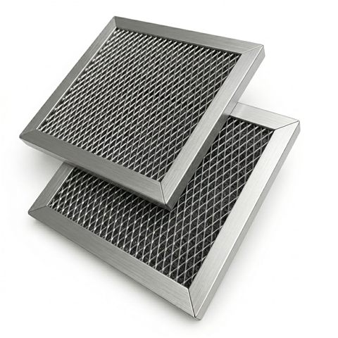
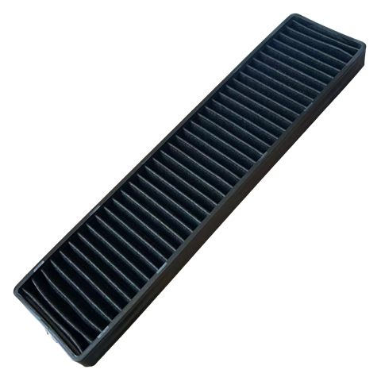
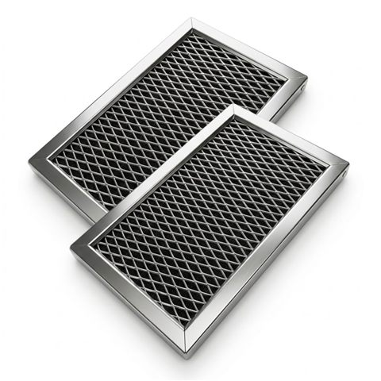

Microwave Grease Filters
Replacement mesh filters designed to support everyday microwave ventilation maintenance.
JUDAOLE supports customers seeking reliable home-appliance replacement parts and compatibility information.
Contact us
Explore common home-appliance replacement-part categories. Please confirm your appliance model before purchasing.
Replacement mesh filters designed to support everyday microwave ventilation maintenance.

Odor-absorbing replacement filters for recirculating over-the-range microwave systems.

Filter options for a range of home-appliance ventilation needs. Confirm your appliance model before purchasing.
JUDAOLE is an independent online business focused on home-appliance replacement products and customer support.
For general questions, please contact us through the support channel associated with your purchase.
We respect visitor privacy. This informational website does not collect personal information unless you choose to provide it through an authorized customer-support channel.